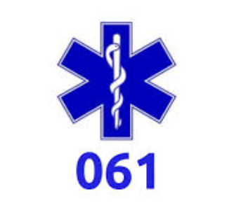
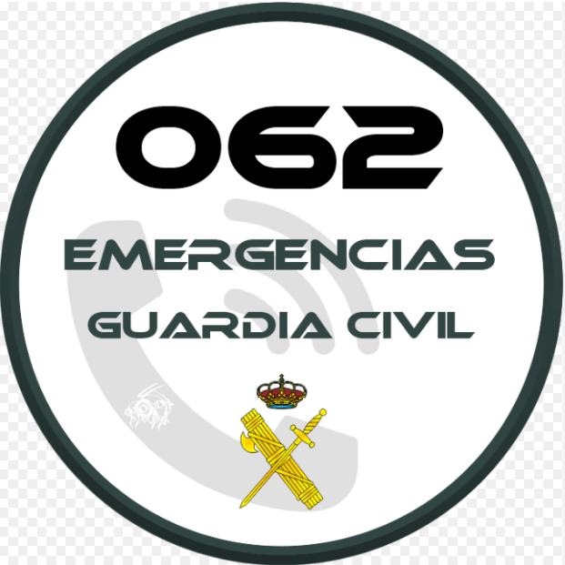
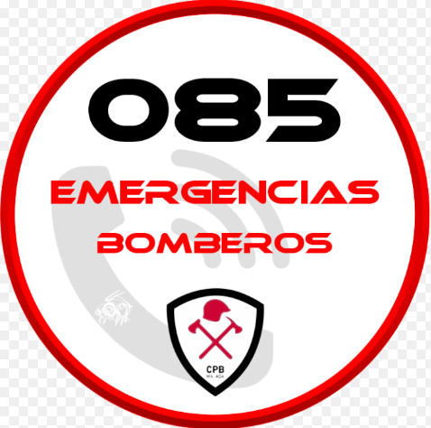
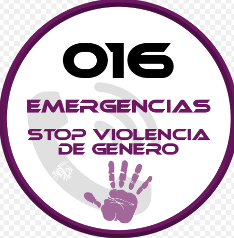
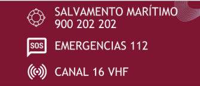
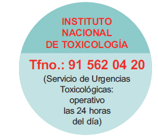

Es importante que todos los ciudadanos conozcan los números de teléfono de emergencia, ya que en situaciones críticas pueden marcar la diferencia entre la vida y la muerte. La información adecuada y clara sobre estos números debe llegar a la población de manera accesible y eficaz. Primero, es fundamental recordar que el número 112 es el número único de emergencias en toda la Unión Europea. A través de este número, se pueden contactar los servicios de policía, bomberos, emergencias médicas y otros servicios de urgencia. Este número está disponible las 24 horas del día, los 365 días del año, y no tiene coste alguno.
| SERVICIOS | ||
|---|---|---|
| 112 | Número único de emergencias en toda la Unión Europea. Disponible las 24 horas del día, los 365 días del año, para atender cualquier tipo de emergencia y coordinar los recursos necesarios. | |
| 061 | Emergencias Sanitarias. Contacta con los servicios de atención médica urgente. |  |
| 091 | Policía Nacional. Para situaciones que requieran intervención policial. | |
| 092 | Policía Local. Número de contacto con las policías municipales de las ciudades. | |
| 062 | Guardia Civil. Disponible las 24 horas del día, los 365 días del año, para atender emergencias y movilizar los recursos necesarios |  |
| 080 o 085 | Bomberos. Contacta con los servicios de bomberos para incendios, rescates y otras emergencias relacionadas |  |
| 016 | Violencia de Género. Línea de atención y asesoramiento para víctimas de violencia de género. |  |
| 900 202 202 | Salvamento y Seguridad Marítima. Para emergencias en el mar y actividades náuticas. |  |
| 900 123 505 | Información sobre accidentes, condiciones meteorológicas y tráfico | |
| 901 222 222 | Cruz Roja Emergencias. Línea de contacto para situaciones de emergencia y asistencia humanitaria. | |
| 91 562 04 20 | Instituto Nacional de Toxicología. Información y asistencia en casos de intoxicaciones. |  |